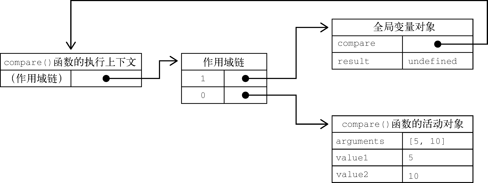
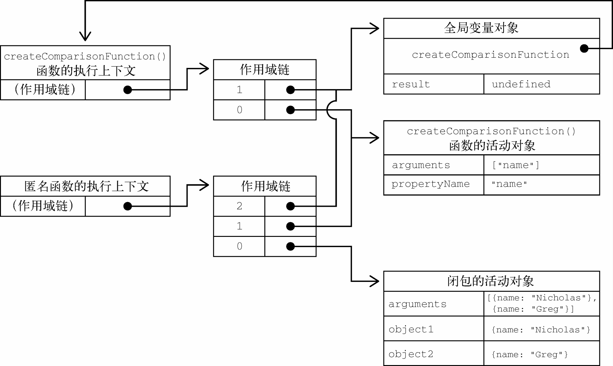

匿名函数经常被人误认为是闭包（closure）。闭包指的是那些引用了另一个函数作用域中变量的函数，通常是在嵌套函数中实现的。比如，下面是之前展示的createComparisonFunction()函数，注意其中加粗的代码：
function createcomparisonfunction(propertyname) {
return function(object1, object2) {
let value1 = object1[propertyname];
let value2 = object2[propertyname];
if (value1 < value2) {
return -1;
} else if (value1 > value2) {
return 1;
} else {
return 0;
}
};
}这里加粗的代码位于内部函数（匿名函数）中，其中引用了外部函数的变量propertyName。在这个内部函数被返回并在其他地方被使用后，它仍然引用着那个变量。这是因为内部函数的作用域链包含createComparisonFunction()函数的作用域。要理解为什么会这样，可以想想第一次调用这个函数时会发生什么。
本书在第4章曾介绍过作用域链的概念。理解作用域链创建和使用的细节对理解闭包非常重要。在调用一个函数时，会为这个函数调用创建一个执行上下文，并创建一个作用域链。然后用arguments和其他命名参数来初始化这个函数的活动对象。外部函数的活动对象是内部函数作用域链上的第二个对象。这个作用域链一直向外串起了所有包含函数的活动对象，直到全局执行上下文才终止。
在函数执行时，要从作用域链中查找变量，以便读、写值。来看下面的代码：
function compare(value1, value2) {
if (value1 < value2) {
return -1;
} else if (value1 > value2) {
return 1;
} else {
return 0;
}
}
let result = compare(5, 10);这里定义的compare()函数是在全局上下文中调用的。第一次调用compare()时，会为它创建一个包含arguments、value1和value2的活动对象，这个对象是其作用域链上的第一个对象。而全局上下文的变量对象则是compare()作用域链上的第二个对象，其中包含this、result和compare。图10-1展示了以上关系。

图 10-1
函数执行时，每个执行上下文中都会有一个包含其中变量的对象。全局上下文中的叫变量对象，它会在代码执行期间始终存在。而函数局部上下文中的叫活动对象，只在函数执行期间存在。在定义compare()函数时，就会为它创建作用域链，预装载全局变量对象，并保存在内部的[[Scope]]中。在调用这个函数时，会创建相应的执行上下文，然后通过复制函数的[[Scope]]来创建其作用域链。接着会创建函数的活动对象（用作变量对象）并将其推入作用域链的前端。在这个例子中，这意味着compare()函数执行上下文的作用域链中有两个变量对象：局部变量对象和全局变量对象。作用域链其实是一个包含指针的列表，每个指针分别指向一个变量对象，但物理上并不会包含相应的对象。
函数内部的代码在访问变量时，就会使用给定的名称从作用域链中查找变量。函数执行完毕后，局部活动对象会被销毁，内存中就只剩下全局作用域。不过，闭包就不一样了。
在一个函数内部定义的函数会把其包含函数的活动对象添加到自己的作用域链中。因此，在createComparisonFunction()函数中，匿名函数的作用域链中实际上包含createComparisonFunction()的活动对象。图10-2展示了以下代码执行后的结果。
let compare = createcomparisonfunction('name');
let result = compare({ name: 'nicholas' }, { name: 'matt' });
图 10-2
在createComparisonFunction()返回匿名函数后，它的作用域链被初始化为包含createComparisonFunction()的活动对象和全局变量对象。这样，匿名函数就可以访问到createComparisonFunction()可以访问的所有变量。另一个有意思的副作用就是，createComparisonFunction()的活动对象并不能在它执行完毕后销毁，因为匿名函数的作用域链中仍然有对它的引用。在createComparisonFunction()执行完毕后，其执行上下文的作用域链会销毁，但它的活动对象仍然会保留在内存中，直到匿名函数被销毁后才会被销毁：
// 创建比较函数
let comparenames = createcomparisonfunction('name');
// 调用函数
let result = comparenames({ name: 'nicholas' }, { name: 'matt' });
// 解除对函数的引用，这样就可以释放内存了
comparenames = null;这里，创建的比较函数被保存在变量compareNames中。把compareNames设置为等于null会解除对函数的引用，从而让垃圾回收程序可以将内存释放掉。作用域链也会被销毁，其他作用域（除全局作用域之外）也可以销毁。图10-2展示了调用compareNames()之后作用域链之间的关系。
注意 因为闭包会保留它们包含函数的作用域，所以比其他函数更占用内存。过度使用闭包可能导致内存过度占用，因此建议仅在十分必要时使用。V8等优化的JavaScript引擎会努力回收被闭包困住的内存，不过我们还是建议在使用闭包时要谨慎。
this对象在闭包中使用this会让代码变复杂。如果内部函数没有使用箭头函数定义，则this对象会在运行时绑定到执行函数的上下文。如果在全局函数中调用，则this在非严格模式下等于window，在严格模式下等于undefined。如果作为某个对象的方法调用，则this等于这个对象。匿名函数在这种情况下不会绑定到某个对象，这就意味着this会指向window，除非在严格模式下this是undefined。不过，由于闭包的写法所致，这个事实有时候没有那么容易看出来。来看下面的例子：
window.identity = 'the window';
let object = {
identity: 'my object',
getidentityfunc() {
return function() {
return this.identity;
};
}
};
console.log(object.getidentityfunc()()); // 'the window'这里先创建了一个全局变量identity，之后又创建一个包含identity属性的对象。这个对象还包含一个getIdentityFunc()方法，返回一个匿名函数。这个匿名函数返回this.identity。因为getIdentityFunc()返回函数，所以object.getIdentityFunc()()会立即调用这个返回的函数，从而得到一个字符串。可是，此时返回的字符串是"The Winodw"，即全局变量identity的值。为什么匿名函数没有使用其包含作用域（getIdentityFunc()）的this对象呢？
前面介绍过，每个函数在被调用时都会自动创建两个特殊变量：this和arguments。内部函数永远不可能直接访问外部函数的这两个变量。但是，如果把this保存到闭包可以访问的另一个变量中，则是行得通的。比如：
window.identity = 'the window';
let object = {
identity: 'my object',
getidentityfunc() {
let that = this;
return function() {
return that.identity;
};
}
};
console.log(object.getidentityfunc()()); // 'my object'这里加粗的代码展示了与前面那个例子的区别。在定义匿名函数之前，先把外部函数的this保存到变量that中。然后在定义闭包时，就可以让它访问that，因为这是包含函数中名称没有任何冲突的一个变量。即使在外部函数返回之后，that仍然指向object，所以调用object.getIdentityFunc()()就会返回"My Object"。
注意
this和arguments都是不能直接在内部函数中访问的。如果想访问包含作用域中的arguments对象，则同样需要将其引用先保存到闭包能访问的另一个变量中。
在一些特殊情况下，this值可能并不是我们所期待的值。比如下面这个修改后的例子：
window.identity = 'the window';
let object = {
identity: 'my object',
getidentity () {
return this.identity;
}
};
getIdentity()方法就是返回this.identity的值。以下是几种调用object.getIdentity()的方式及返回值：
object.getidentity(); // 'my object'
(object.getidentity)(); // 'my object'
(object.getidentity = object.getidentity)(); // 'the window'第一行调用object.getIdentity()是正常调用，会返回"My Object"，因为this.identity就是object.identity。第二行在调用时把object.getIdentity放在了括号里。虽然加了括号之后看起来是对一个函数的引用，但this值并没有变。这是因为按照规范，object.getIdentity和(object.getIdentity)是相等的。第三行执行了一次赋值，然后再调用赋值后的结果。因为赋值表达式的值是函数本身，this值不再与任何对象绑定，所以返回的是"The Window"。
一般情况下，不大可能像第二行和第三行这样调用对象上的方法。但通过这个例子，我们可以知道，即使语法稍有不同，也可能影响this的值。
由于IE在IE9之前对JScript对象和COM对象使用了不同的垃圾回收机制（第4章讨论过），所以闭包在这些旧版本IE中可能会导致问题。在这些版本的IE中，把HTML元素保存在某个闭包的作用域中，就相当于宣布该元素不能被销毁。来看下面的例子：
function assignhandler() {
let element = document.getelementbyid('someelement');
element.onclick = () => console.log(element.id);
}以上代码创建了一个闭包，即element元素的事件处理程序（事件处理程序将在第13章讨论）。而这个处理程序又创建了一个循环引用。匿名函数引用着assignHandler()的活动对象，阻止了对element的引用计数归零。只要这个匿名函数存在，element的引用计数就至少等于1。也就是说，内存不会被回收。其实只要这个例子稍加修改，就可以避免这种情况，比如：
function assignhandler() {
let element = document.getelementbyid('someelement');
let id = element.id;
element.onclick = () => console.log(id);
element = null;
}在这个修改后的版本中，闭包改为引用一个保存着element.id的变量id，从而消除了循环引用。不过，光有这一步还不足以解决内存问题。因为闭包还是会引用包含函数的活动对象，而其中包含element。即使闭包没有直接引用element，包含函数的活动对象上还是保存着对它的引用。因此，必须再把element设置为null。这样就解除了对这个COM对象的引用，其引用计数也会减少，从而确保其内存可以在适当的时候被回收。